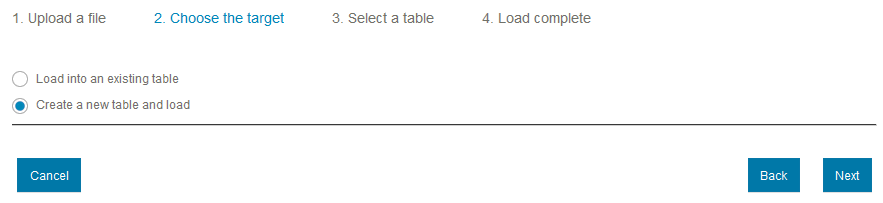
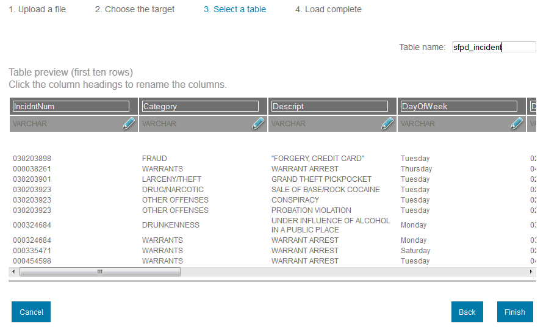
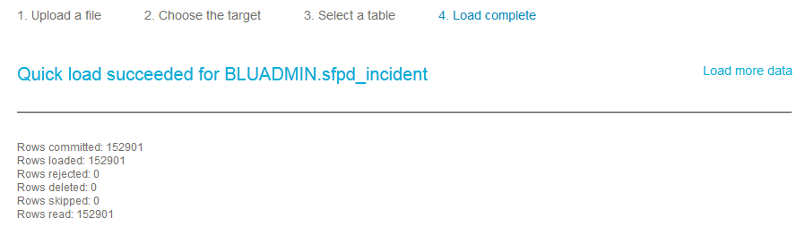
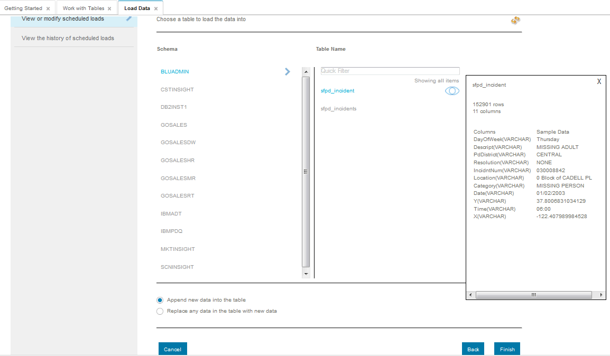

Alex, the crime data analyst at San Francisco Peace organization would need to analyze last 11 years of crime data and create specific reports for policy makers.
This scenario cannot be completed if you do not have Microsoft Excel software on your laptop. Please skip this scenario and choose another one if you do not have Excel.
1) Alex downloads the SF incident report data that is available in CSV zipped format from:
http://apps.sfgov.org/datafiles/view.php?file=Police/sfpd_incident_all_csv.zip
2) Unzip attached file which contains San Francisco Police Department data for year 2003 to 2014.
3) Login to BLU Acceleration for the cloud web console with the provided user name/password. Click Manage -> Load Data from the main menu.
4) Using "Quick load" section - Browse and select sfpd_incident_2003.csv file from the unzipped folder in Step 2
5) Use default options -> Load File

6) Click OK for alert message -> File upload will start after which it generates File Preview -> Next

7) Choose "Create a new table and load" at the first time when you are loading -> Next
8) Change the table name as you would like -> Finish
9) After Quick Load succeeds -> Load more data, you can choose not to load all yearly data to save time
10) Repeat steps 4 through 9 except steps 7 and 8 where you need to select option "Load into an existing table" for loading data for years 2004 to 2014 into the same table -> Select the Schema and Table Name -> Finish
11) Click Analyze -> Explore with Excel from the main menu
12) Select the section: Bring BLU data into Excel for analysis -> Make sure to download and install DB2 client driver on your laptop (available from Set Up Menu -> Downloads page)
Click link for "Run Query"

13) Enter any of these queries on Run Query page:
13.1) Query to see what type of incidents are happening the most:
SELECT "Category", count ("Category") as Occurrences FROM "BLUADMIN"."sfpd_incident" group by "Category
13.2) Query to see where most of the crime incidents are happening, this information will be helpful to decide which locations need tighter security:
SELECT "Location", count ("Location") as Occurrences FROM "BLUADMIN"."sfpd_incident" group by "Location" order by Occurrences desc
14) Click the link "Run this query from Excel by downloading the odc file"

15) Click OK -> Open. You will get an error if you have not installed DB2 client driver on your laptop as outlined in step 12

16) Enter the user name and password with which you logged in -> OK

17) View the query results graphically through a pie chart or bar chart
Pie chart created with 13.1) Query results:

Bar chart created with about top 40 crime locations using 13.2) Query: